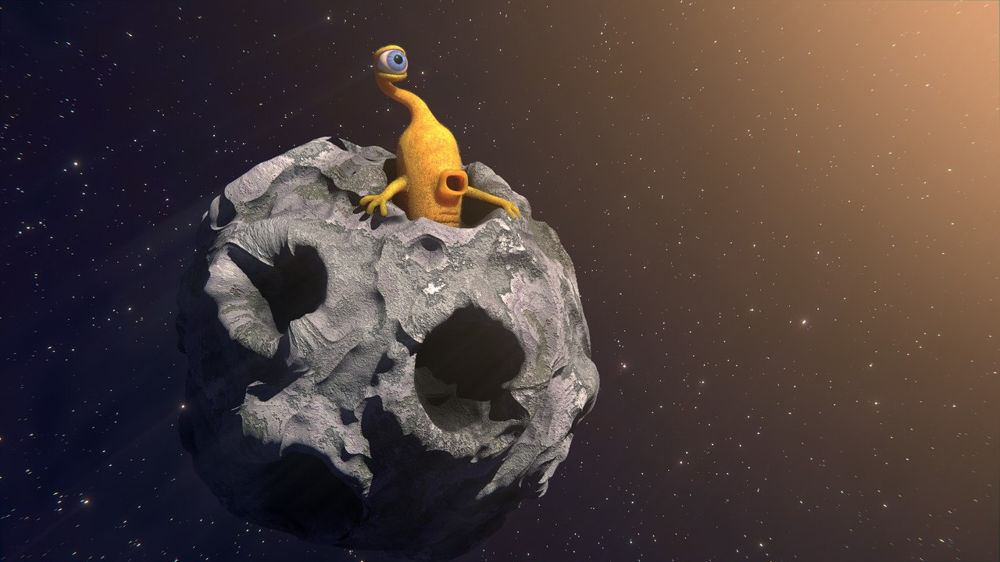
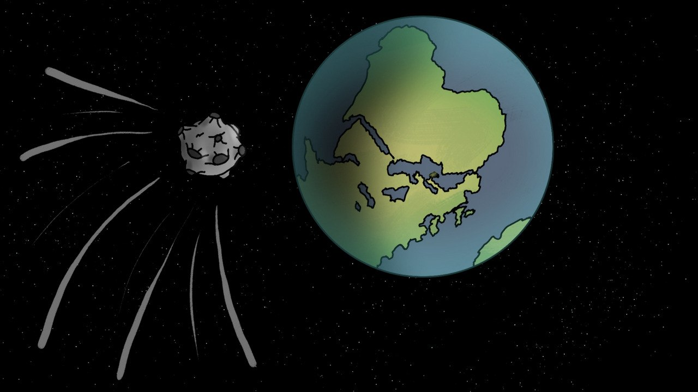
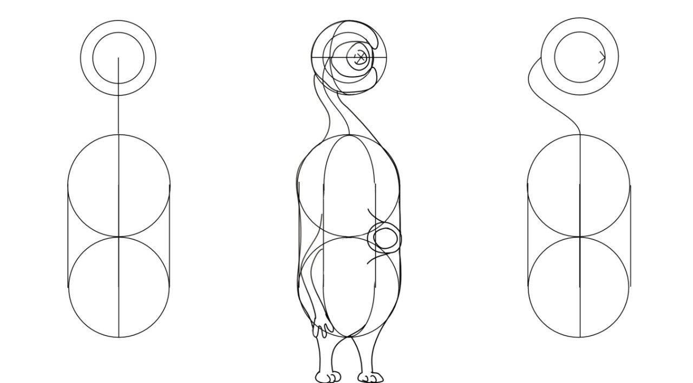
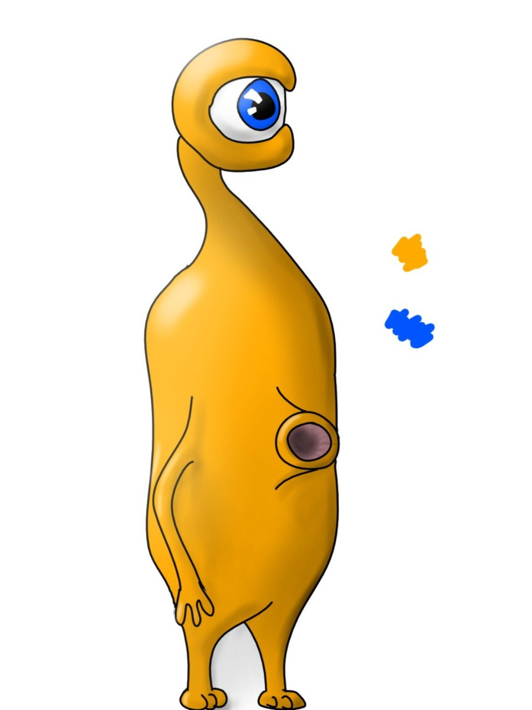

University Project · 3D Content CreationHochschulprojekt · 3D Content Creation
The Asteroid
A short, humorous 3D project from my Master's studies.
The task was to integrate 3D content into real footage recorded on campus.
Ein kurzes, humorvolles 3D-Projekt aus meinem Masterstudium.
Die Aufgabe bestand darin, 3D-Inhalte in reale Campus-Aufnahmen einzufügen.
BlenderVideoCamera Tracking
Story ideaStory-Idee
An alien lives inside an asteroid.Ein Alien lebt in einem Asteroiden.
The asteroid crashes onto the campus of Schmalkalden University.Der Asteroid stürzt auf dem Campus der Hochschule Schmalkalden ab.
The tone is simple, playful and intentionally humorous.Der Ton ist einfach, verspielt und bewusst humorvoll.
Project taskProjektaufgabe
Record real footage on campusReale Aufnahmen auf dem Campus erstellen
Insert 3D objects into the footage3D-Objekte in das Videomaterial einfügen
Match perspective, lighting and compositionPerspektive, Beleuchtung und Komposition angleichen
Additional RenderingsZusätzliche Renderings

Concept art and visual planningConcept Art und visuelle Planung

First digital idea: the asteroid approaching Earth.Erste digitale Idee: Der Asteroid rast auf die Erde zu.

Early shape exploration for the alien.Frühe Formsuche für das Alien.

Colored concept art for the one-eyed alien.Farbige Konzeptzeichnung des einäugigen Aliens.
My ContributionMein Beitrag
I created the entire project myselfIch habe das gesamte Projekt selbst umgesetzt
Original idea, story concept and visual directionEigene Idee, Story-Konzept und visuelle Richtung
Concept art for the alien and asteroid sceneConcept Art für das Alien und die Asteroiden-Szene
All 3D models created by meAlle 3D-Modelle wurden von mir erstellt
Procedural materials and texturingProzedurale Materialien und Texturierung
Rigging and animation of the alien characterRigging und Animation des Alien-Charakters
Filming and post-productionAufnahme und Postproduktion
Filmed almost all shots myself, except for one shotFast alle Aufnahmen selbst gefilmt, bis auf eine Einstellung
Integration of 3D elements into real campus footageIntegration der 3D-Elemente in reale Campus-Aufnahmen
Editing, compositing and color gradingSchnitt, Compositing und Color Grading
Soundtrack, sound design and alien voice actingSoundtrack, Sounddesign und Stimme des Aliens